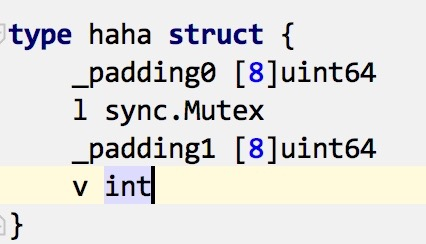
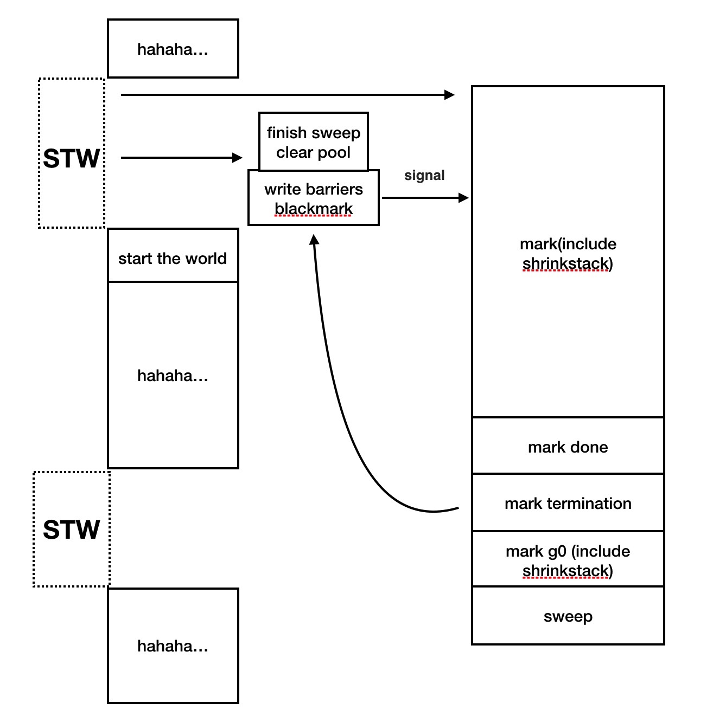

go1.8 的内存分配与 gc为什么老调重弹？我们能在书籍或者网络上找到不少关于golang 内存分配和 gc相关的资料。但往往发现他们有如下不尽人意的地方：
go 的 gc 在每一个版本都有比较大的改动。尤其是目前的 1.8 下一些对于 gc 的老观点和优化思路已经不再适用了。 一般的文章开篇会先讲讲 gc 的基本算法，然后提一下 go 的三色标记，最后是 go gc 的基本流程。说实话，看完之后我依然不太确定我应该如何利用这些知识。 还有一些资料是源码分析，虽然分了主次，但点明这对于程序员意味着什么的部分不足，最终的收获依然不大。 私以为，思路得转换一下，与其考虑如何把 gc 这件复杂的工作说清楚不如尝试去仅围绕一个核心问题展开。这个核心就是：对于 gopher 来说，如何去利用这些规则。 本文便是对这一问题的小小尝试，受限才识，如有谬误还望指正。 注：基于 go1.8 内存分配内存分配对于程序员来讲一般有两个基本问题：
分配内存分配的优化比较粗暴的来看就是一系列的切分／合并内存块的操作，golang 基于 tcmalloc 来做这个事情，原则上是够用了，这一块也基本没有随着版本更新有大的变动。 回收与释放是两码事这个比较好理解，需要关注的是内存释放并不是立即执行的，而是一条“建议”，在 linux 下，这是一条 madvise syscall，至于回收与否还要看 kernel 的“心情”。所以有的时候去测试 go 程序进程的内存占用的时候不要激动的太早，并不是 go 贪心抓着你的内存不释放，而是 kernel 还没点头呢。 有意思的是，分配也不是立即发生的。我们可以称之为“机会主义分配”，也就是真正用到这块内存的时候，才完成最终的物理内存占用。 栈？堆内存布局的事被 go 干完了，看上去程序员无能为力。但实际上我们还是可以做点事情的。 很多 go 的程序员应该都知道尽管我们不能指定数据分配在栈还是堆上，但 go 会尽可能的把数据分配在栈空间上以减少 gc 的压力。我们可以通过 go 提供的逃逸分析来向后优化自己的代码。 不过也不能迷信这种“魔法”，对于大于 32KB 的数据来说，还是会落到heap 上的，并且会触发 gc 条件检查，看我们有没有必要做一下“打扫卫生”的工作。 对齐事情到这还没完，关于布局还有一项重要的工作就是内存对齐。听到这里，大家可能会想莫非我要“魔改” go 的源码？ 我是个胆小如鼠的人，只敢用一些障眼法。之所以做内存对齐有两方面原因：
从书本上以及大多数介绍来看，内存不对齐带来的损失可以简单理解为我为了多拿／写 1B，却不得不连带拿／写好几 B 。听上去就很可怕。 好在对于 cpu 来说，它不会去内存银行取 1B 这种零钱，它要的都是 64B 这种整钱。尤其是如今的 CPU 内存不对齐带来的惩罚会更小，具体是什么技术我不得而知，一方面 cache line 可以作为解释，另外一方面实际的指令测试也符合这个结果。 不过，对于频繁持锁操作来说，我们得特别注意内存对齐问题。因为我们在不停修改锁状态的同时，“污染”了整个 cache line, 可能我们只是进行简单的读操作，但缓存也失效了，CPU 必须重新到内存拉取这份数据。这个性能惩罚积累起来就很厉害了。在 golang 中，我们尽管不能指定内存对齐，但还是可以用这样的障眼法的： 下面我们来说说第二条，这一条可能对许多人来说非常陌生。但当我们要做一些手工汇编优化的时候就来劲了。这个问题比较偏门比较大，同时比较好玩，所以我会在其他时候另外开一篇继续它的故事。 基本上我们肉眼可见的内存分配问题就这些了，其他的具体分配策略固然重要，但我们只是开车的老司机，不是修车的老师傅。如果有兴趣，自己打开发动机盖瞧瞧吧，我这里就不谈了。 接下来我要开车了，乘客们请系好安全带。 GCGC 是所有使用自带 GC 的语言的程序员津(kuang)津(cao)乐(ni)道(ma)的话题。我觉得吧，讨论 GC 之所以如此美滋滋，实在是 GC 和做爱太像了，你可以做的很粗暴，也可以很细腻。给人带来的体验是完全不同的。GC 中的 stop-the-world 之所以可恶，就像做爱的时候你领导给你来电话，不停的打，废话还长，你能受得了吗？ 早先的 GC 之所以被喷，然后大家孜孜不倦的做优化，就是因为 STW 的时间太长了。 老司机，快停车最早期的 gc 就像你做为一名老司机带着乘客奔往目的地。这个时候警察来了，让你停车，停车就算了，还要检查你的老司机证，看你有没有疲劳驾驶，眼睛是不是瞎，耳朵是不是聋，然后一个个查乘客身份证，原来是听说恐怖分子在车上放了炸弹。最终拆了车上的炸弹，末了给你敬个礼。这才放你走。虽然车上的安全隐患被消除了，但太耽误事了 ———— 这可是一车水灵灵的女乘客啊。 后来做了点升级，警察换成中国队长了，那老牛了。虽然还是要你停车，停车的时候还是先对你一通差，但扫描炸弹的时候可以继续开，毕竟中国队长，杠杠的，恐怖分子还能飞了不成。显然，你在那里开车终究干扰了队长，队长让你停车闭嘴，然后做第二次排查，最终找到所有炸弹。这个时候大家已经很满意了，毕竟比以前体验好太多。 现在升级到了高铁侠，高铁侠那是高科技啊，不用第二次排查了。停车，上车，开车，停车，下车，开车。就是这么酷，但缺憾就是高铁侠太特么重了，你的小马力跑起来变吃力了不少。 以上就是 go GC 升级的基本历史，略有出入，但大体差不离。我所想要强调的重点就是对 GC 的优化注意力应该从 STW 转移到负载上了，这也是接下来 go1.9 要做的事情。 优化原先大致的优化思路集中在减少在堆上的分配次数，这是没问题的，但原先的初衷是为了减少 STW 的时间，现在在转变为减少 mark 的压力。 twitter 之前有给过对栈的 GC 优化办法，非常有意思，它做了栈空间优化。因为对于减少 GC 开销基本很少会想到关栈什么事。我们知道 Go 引入了自增长的栈设计，那么这肯定同时带来了回收的问题。原先 shrinkstack 操作是在 STW 阶段完成的，现已加入了“并发标记豪华午餐”。聪明人很快发现了，所谓的 go1.8 GC 优化就是“障眼法”啊，或许可以这么说，当然真实工作没那么简单。 流水账我先用小学生作文的方式来描述一下 GC 的过程： 今天是星期天，又到了扶老奶奶过马路，胸口的红领巾更鲜艳的日子了。 不过我今天不扶老奶奶了，今天我要帮 Go 处理垃圾。（好违和）用 background 的模式呢。（太违和） 首先，我处理一下参数。然后 STW， 确认上次清理完毕，然后清理sync.pool，开启 blackmark 和写屏障。重启世界。该干嘛干嘛去，与此同时开 n 个分身全力（咋回事？）标记垃圾，收缩栈空间。垃圾找完了，我又停止了一次世界，关闭 blackmark 和写屏障，标记 g0 垃圾，清理垃圾（我又派分身去做了），重启世界。 哎，这 tm 都是什么和什么。 不过，我胸口的红领巾更鲜艳了。 最后送一张图给大家：  |